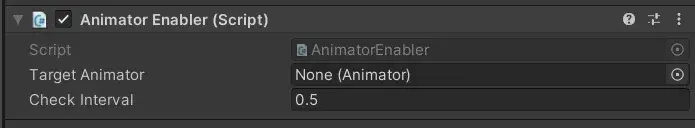

Mod
Animator Enabler
- Downloads
- 238
- Favourites
- 0
This is a tool intended to be used by modders in unity and as a dependency to allow any item they want to be animated using the animator script in unity.
The script in the plugin works by turning on the animator manually because tarkov’s parent classes do not allow animated items outside niche circumstances.
How to use this plugin:
- Import the .dll file to your unity project’s plugin folder.
- This will give you access to the “Animator Enabler” script.
- Assign the object your animator is attached to to the “Target Animator” slot.
- Set your check interval below that.
- I do not recommend allowing it to check the animator any less than every half second, the higher the better but the lower you put it the less lag time there will be when the item appears on screen to when the animation is activated.
List this plugin in your mod as a dependency, please do not include this mod in your own mods.

Version
1.0.0
SPT ~3.11
Fika: unknown
238 downloadsUnknown size
Initial Version
VirusTotal: report 1